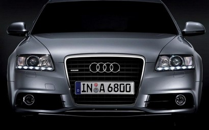
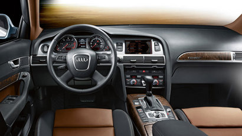

Audi A6 этого поколения - очень ликвидный автомобиль. Машина была удостоена звание «самой продаваемой в Европе» три года подряд: в 2005, 2006 и 2007 годах. Дебют и начало производства - 2004 год. В 2008 году проходит рестайлинг модели, появляются светодиодные задние фонари, изменился передний бампер и противотуманные фары. Интерьер получил изменения в виде нового центрального дисплея, приборной панели, а так же появилась новая версия MMI 3G. В 2011 году производство АУДИ А6 С6 завершилось и эстафетная палочка была передана следующей генерации А6 с индексом С7.
 
Салон автомобиля, а конкретно - организация его внутреннего пространства, находится на самом высоком уровне. Двигатель расположен перед передней осью, и это позволило получить просто огромный салон, но в то же время - и большой передний свес, что является недостатком (бампер часто повреждают о высокий бордюр). При всей добротности салона, не обошлось и без сверчков: может скрипеть обшивка дверей, передних стоек, передний подлокотник, рамки вокруг дефлекторов и на торпедо. Звуки могут идти и от плафона освещения, нижнего кронштейна бардачка и от механизма регулировки ремня безопасности. Многовато для премиум-класса. Нередки жалобы от автовладельцев о том, что шумоизоляция стала хуже по сравнению с пятым поколением А6. Особенно это заметно на бензиновых авто, а вот у дизелей моторный отсек изолирован от шума хорошо. К 100 тысячам км пробега могут появиться перебои в работе кондиционера. Связаны они с закисшими клапанами отопителя. По гарантии меняли блок клапанов, после гарантийного срока за это дилер просил 25 тысяч рублей. Но их можно было почистить на стороннем сервисе за пару-тройку тысяч, и работоспособность системы кондиционирование восстанавливалась. Электрика Ауди А6 это отдельная история. В машине находится 72 ЭБУ, которые собирают информацию практически отовсюду. По этой причине после замены большинства деталей требуется сделать запись в том или ином блоке программным методом для проведения адаптации. Например, даже замена АКБ требует программной прописки. После 100 тысяч пробега штатный проигрыватель дисков может начать «глючить», что проявляется в отказе читать CD. Часто помогала банальная установка чистящего диска. Если аудиосистема начинала плохо принимать радио, то необходимо заново обжать контакты проводов на колодке. На таком же пробеге могут отказать датчики парковочного радара.
Гамма двигателей представлена 20-ю различными вариантами, из которых 8 - дизельные. Самый нежелательный к покупке дизельный мотор - 2.0 ТДИ (BLB/BNA/BRE) с насос-форсунками. Частая неисправность - износ привода маслонасоса и трещины в ГБЦ. Клапан ЕГР и насос-форсунки также не отличаются долговечностью. В 2007 году автопроизводитель устранил эти недостатки, и начал использовать для впрыска систему «Коммон Рэйл». Но появились неисправности по ТНВД. Выбирая между двигателями в 140 и 170 л.с.(CAHA), помните - конструктивно это разные моторы, во втором случае используются пьезоэлектрические форсунки, которые восстановлению не подлежат. V-образные дизеля - предмет для постоянных споров на специализированных форумах. Все они оснащены впрыском «Common Rail» и цепями в ГРМ. Цепной привод начинает доставлять проблемы ближе к 200 тысячам км. Конкретно - изнашивается один из натяжителей. Все бы ничего, но расположена цепь со стороны коробки, и для ее замены необходим полный демонтаж силовой установки, что совсем недешево.
Если игнорировать шум цепи и продолжать ездить на автомобиле, то со временем произойдет ее перескок, который сопровождается повреждением клапанов. Меньше чем за 100 тысяч рублей такой двигатель вам не отремонтируют. Производитель убрал проблему с натяжителем в 2008 году, но сама цепь все равно растягивается ближе к 300 тысячам км. Все ТДИ-версии могут столкнуться с типичными для современных дизелей неисправностями. Таким примером являются заслонки на впускном коллекторе (цена нового коллектора - от 30 тысяч рублей) и дроссельный узел, в котором изнашиваются шестерни. Турбокомпрессор служит обычно 230-250 тысяч. Но все-таки дизельные варианты предпочтительнее к покупке в плане долговечности. Если заменить вышедший из строя, путь и дорогой, узел, то можно ездить еще практически столько же. На практике есть случаи, когда дизельная A6 C6 преодолевала отметку в 300 тысяч км без серьезных ремонтов. Самые дешевые в эксплуатации - бензиновые моторы (если речь не идет о машинах с огромным пробегом). Но это только пока они исправны. У них у всех можно выделить одну общую проблему - малый ресурс катушек зажигания. Кроме того в моторах TFSI еще мало служит термостат и впускной коллектор, замена которого очень дорога. Цепные бензиновые моторы имеют схожие проблемы, что и дизеля. И точно также цепь расположена со стороны КПП, а значит ее замена - удар по кошельку владельца. Со временем появились умельцы, меняющие цепь на некоторых моторах без их демонтажа. Во всех бензиновых атмосферных ДВС, кроме 3.0 могут появляться задиры на стенках цилиндров. Это будет понятно по возросшему расходу масла. Чтобы этого не произошло необходимо следить за состоянием топливных форсунок (при неисправности они смывают много масла со стенок), своевременно проводить ТО двигателя, использовать масло с соответствующими допусками и отслеживать его уровень, не допуская езды с масляным голоданием. Бензиновые моторы с турбонаддувом просто «жрут» масло. Производитель подстраховался и сделал допустимым расход до 500 граммов на тысячу км пробега. «Масложор» начинается обычно после 30-40 тысяч км. Замена клапана ЕГР часто решала проблему с расходом масла. Турбина на бензиновых ДВС служит от 150 до 300 тысяч км, в зависимости от манеры езды и качества ТО.
Гамма двигателей представлена 20-ю различными вариантами, из которых 8 - дизельные. Самый нежелательный к покупке дизельный мотор - 2.0 ТДИ (BLB/BNA/BRE) с насос-форсунками. Частая неисправность - износ привода маслонасоса и трещины в ГБЦ. Клапан ЕГР и насос-форсунки также не отличаются долговечностью. В 2007 году автопроизводитель устранил эти недостатки, и начал использовать для впрыска систему «Коммон Рэйл». Но появились неисправности по ТНВД. Выбирая между двигателями в 140 и 170 л.с.(CAHA), помните - конструктивно это разные моторы, во втором случае используются пьезоэлектрические форсунки, которые восстановлению не подлежат. V-образные дизеля - предмет для постоянных споров на специализированных форумах. Все они оснащены впрыском «Common Rail» и цепями в ГРМ. Цепной привод начинает доставлять проблемы ближе к 200 тысячам км. Конкретно - изнашивается один из натяжителей. Все бы ничего, но расположена цепь со стороны коробки, и для ее замены необходим полный демонтаж силовой установки, что совсем недешево.
Если игнорировать шум цепи и продолжать ездить на автомобиле, то со временем произойдет ее перескок, который сопровождается повреждением клапанов. Меньше чем за 100 тысяч рублей такой двигатель вам не отремонтируют. Производитель убрал проблему с натяжителем в 2008 году, но сама цепь все равно растягивается ближе к 300 тысячам км. Все ТДИ-версии могут столкнуться с типичными для современных дизелей неисправностями. Таким примером являются заслонки на впускном коллекторе (цена нового коллектора - от 30 тысяч рублей) и дроссельный узел, в котором изнашиваются шестерни. Турбокомпрессор служит обычно 230-250 тысяч. Но все-таки дизельные варианты предпочтительнее к покупке в плане долговечности. Если заменить вышедший из строя, путь и дорогой, узел, то можно ездить еще практически столько же. На практике есть случаи, когда дизельная A6 C6 преодолевала отметку в 300 тысяч км без серьезных ремонтов. Самые дешевые в эксплуатации - бензиновые моторы (если речь не идет о машинах с огромным пробегом). Но это только пока они исправны. У них у всех можно выделить одну общую проблему - малый ресурс катушек зажигания. Кроме того в моторах TFSI еще мало служит термостат и впускной коллектор, замена которого очень дорога. Цепные бензиновые моторы имеют схожие проблемы, что и дизеля. И точно также цепь расположена со стороны КПП, а значит ее замена - удар по кошельку владельца. Со временем появились умельцы, меняющие цепь на некоторых моторах без их демонтажа. Во всех бензиновых атмосферных ДВС, кроме 3.0 могут появляться задиры на стенках цилиндров. Это будет понятно по возросшему расходу масла. Чтобы этого не произошло необходимо следить за состоянием топливных форсунок (при неисправности они смывают много масла со стенок), своевременно проводить ТО двигателя, использовать масло с соответствующими допусками и отслеживать его уровень, не допуская езды с масляным голоданием. Бензиновые моторы с турбонаддувом просто «жрут» масло. Производитель подстраховался и сделал допустимым расход до 500 граммов на тысячу км пробега. «Масложор» начинается обычно после 30-40 тысяч км. Замена клапана ЕГР часто решала проблему с расходом масла. Турбина на бензиновых ДВС служит от 150 до 300 тысяч км, в зависимости от манеры езды и качества ТО.